目次に戻る: Oracle Content Management のファイル共有機能を使ってみよう【初級編】
フォルダをサブスクライブすることで、指定フォルダに何らかの更新が発生した場合に、その通知を受けることができます。通知の受信方法は2種類あります
- 電子メール
- Slack (※サービス管理者により、Slack連携機能が有効化されている場合のみ選択可)
通知を受け取るイベントは、右上のユーザーアイコン→プリファレンス→通知→フォルダのサブスクリプションより選択できます。2023年7月時点では、以下のイベントを選択できます
- フォルダを名前変更、移動または削除する。
- フォルダのメンバーシップを変更する。
- フォルダまたはその内容の一部のパブリック・リンクを共有する。
- フォルダへのフォルダまたはドキュメントの追加。
- フォルダ内のドキュメントの名前変更、移動または削除。
- フォルダ内のドキュメントの編集。
- フォルダ内のドキュメントにコメントする。
サブスクライブ利用時の注意点
- サブスクライブは下位階層に継承されます
- サブスクライブしたフォルダ配下の全てのフォルダおよびファイルが通知対象となります
- サブスクライブを実行したユーザー自身による操作は通知対象外です
- サブスクライブを実行したユーザーではない別のユーザーによる操作は通知対象です 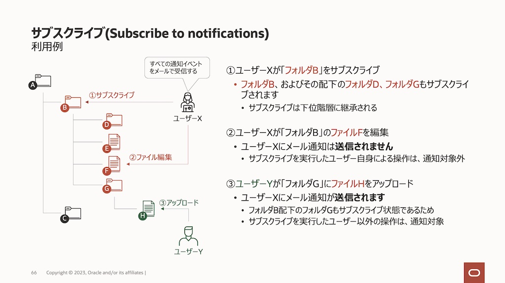
【お知らせ】
この文書は、2023年7月時点での最新バージョン(23.7.1)を元に作成されてます。
チュートリアル内の画面ショットについては、現在のコンソール画面と異なっている場合があります。
前提条件
- OCMインスタンスが作成済であること(以下の作成手順参照)
- OCMの利用ユーザーにOCMインスタンスのCECStandardUserもしくはCECEnterpriseUserアプリケーション・ロールが付与されていること
1. フォルダのサブスクライブによる通知を有効化する
フォルダ・サブスクライブ時に受信するイベントを設定します。ここでは、「フォルダのサブスクリプション」のすべてのイベントを、電子メールで受信します
-
OCMにサイン・インします
-
右上のユーザー・アイコンをクリックし、プリファレンスを選択します
-
プルダウンメニューより通知を選択します
-
通知の受信方法:で電子メールのみを有効化します 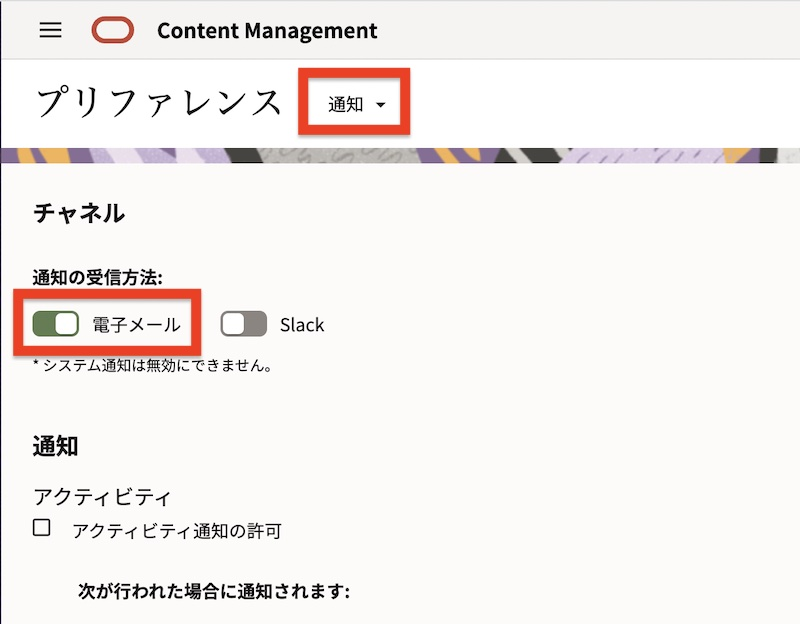
-
画面を下にスクロールし、次が行われた場合に通知されます:のすべてのイベントを選択します 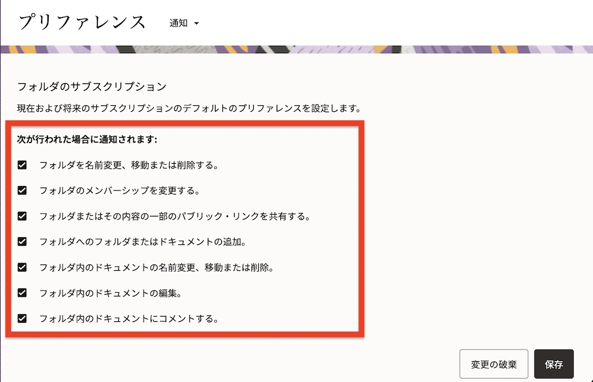
-
右下の保存をクリックします
2. フォルダのサブスクライブ
フォルダを作成し、サブスクライブします
-
左ナビゲーション・メニューのドキュメントを開きます
-
任意のフォルダ(ここでは
サブスクライブ・デモ)を作成します -
作成フォルダのサブスクライブのアイコンをクリックします（もしくは、フォルダを右クリック→通知へのサブスクライブを選択します） 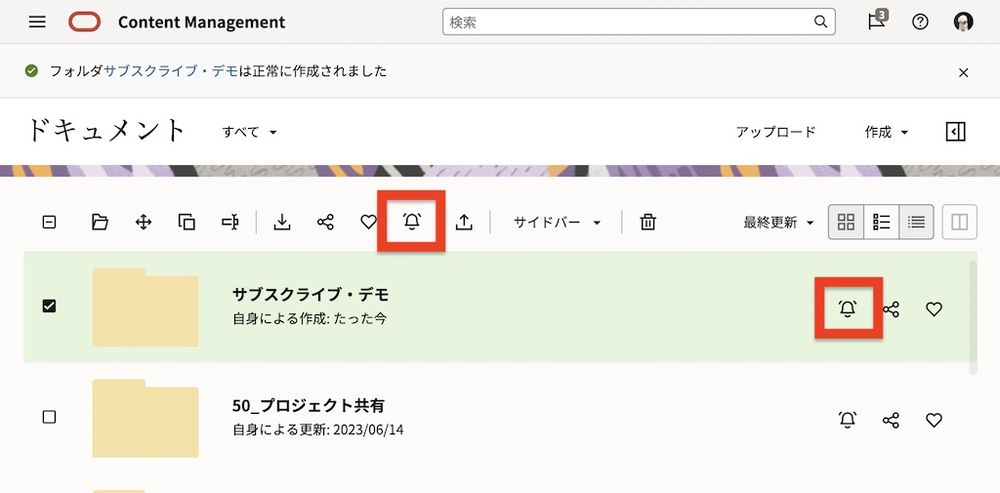
-
確認ダイアログが表示されます。はいをクリックします 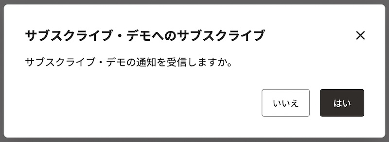
-
フォルダがサブスクライブされたことを確認します 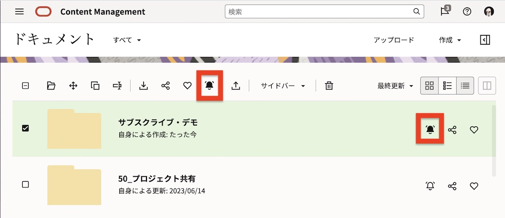
-
サブスクライブしたフォルダを開き、子フォルダを1つ作成します。作成された子フォルダも自動的にサブスクライブ状態となります。 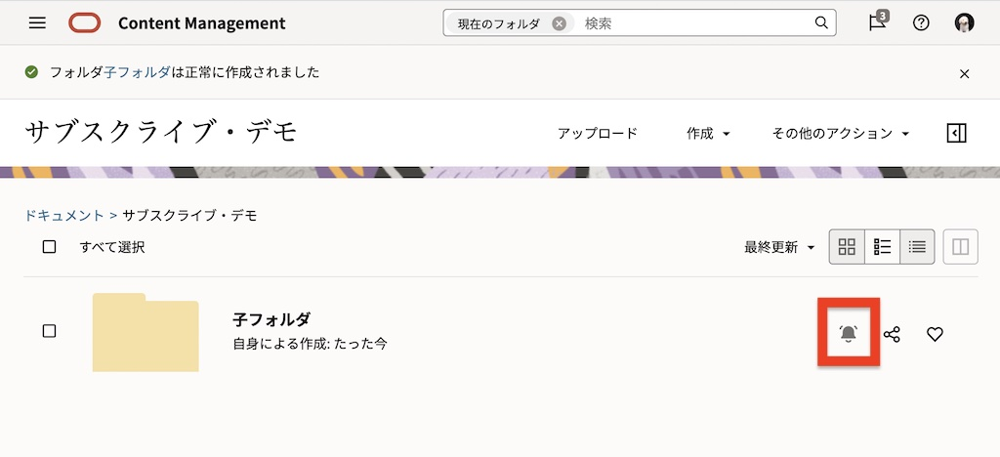
[Memo]
サブスクライブは下位階層に継承されます。
サブスクライブを実行したユーザー自身による操作は通知対象外のため、電子メールは送信されません -
子フォルダを開き、ファイルを1件追加します
[Memo]
サブスクライブを実行したユーザー自身による操作は通知対象外のため、電子メールは送信されません
3. 確認(電子メールによる通知の受信)
-
サブスクライブを実行したフォルダ(ここでは
サブスクライブ・デモ)に、別のユーザーをコントリビュータ権限でメンバー追加します 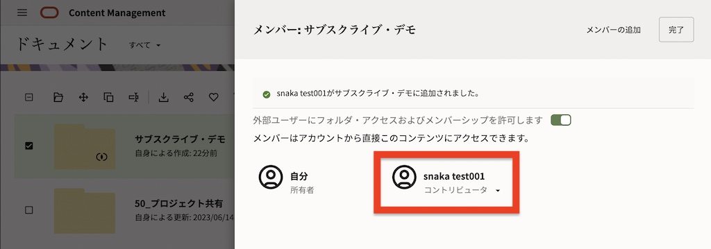[Memo]
サブスクライブを実行したユーザー自身による操作は通知対象外のため、電子メールは送信されません -
別ブラウザを開き、前の手順でメンバー追加した別のユーザーでOCMにサインインします
-
メンバー追加されたフォルダ(ここでは
サブスクライブ・デモ)を開き、ファイルを1件追加します 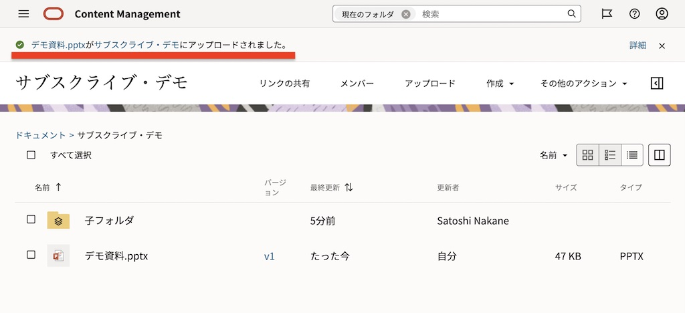 -
しばらくすると、サブスクライブを実行したユーザーのメールアドレスに対して、通知メールが送信されます 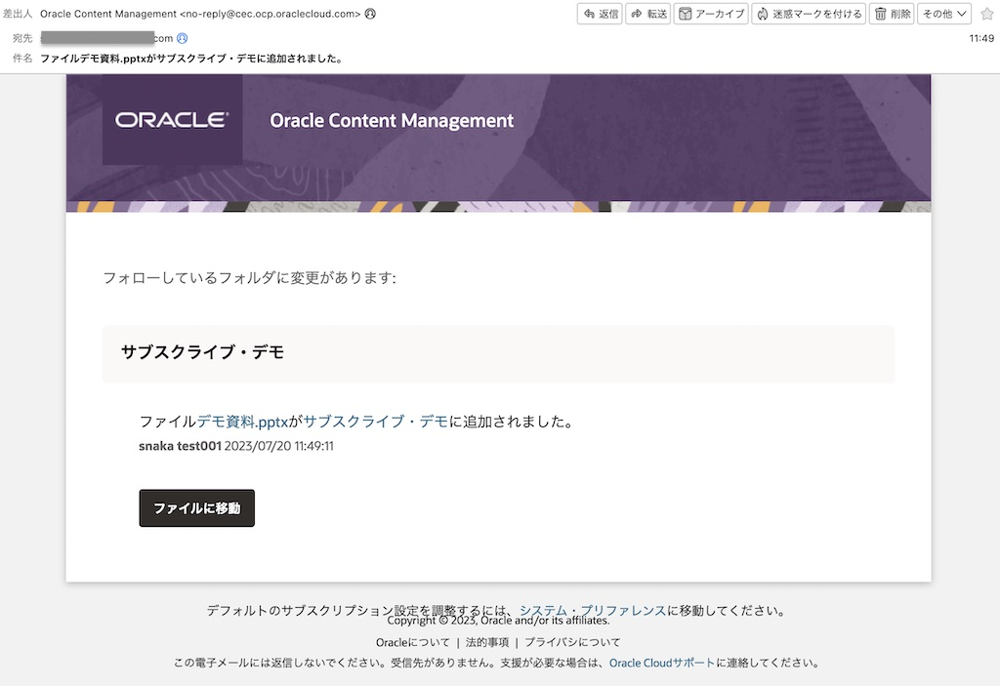
-
追加したファイルを削除(ごみ箱への移動)します。しばらくすると、サブスクライブを実行したユーザーのメールアドレスに対して、通知メールが送信されます 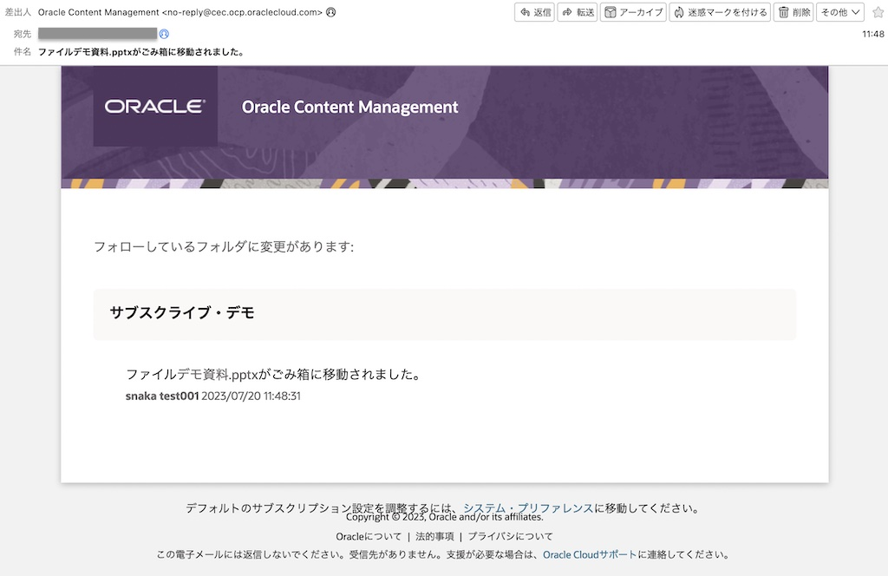
4. サブスクライブの解除
-
サブスクライブを実行したユーザーでOCMにサイン・インします
-
フォルダのサブスクライブ・アイコンをクリックします（もしくは、フォルダを右クリック→通知からのサブスクライブ解除を選択します） 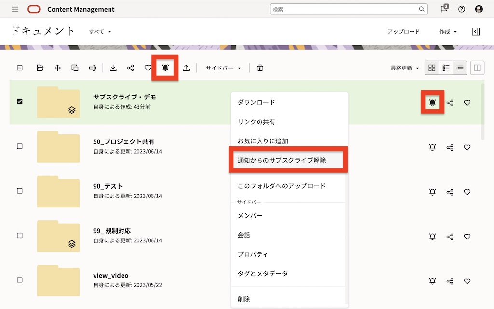
-
確認ダイアログが表示されます。はいをクリックします
-
サブスクライブ状態が解除されたことを確認します 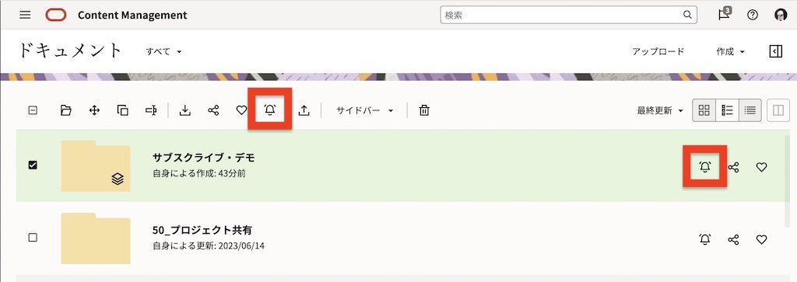
以上でこのチュートリアルは終了です。